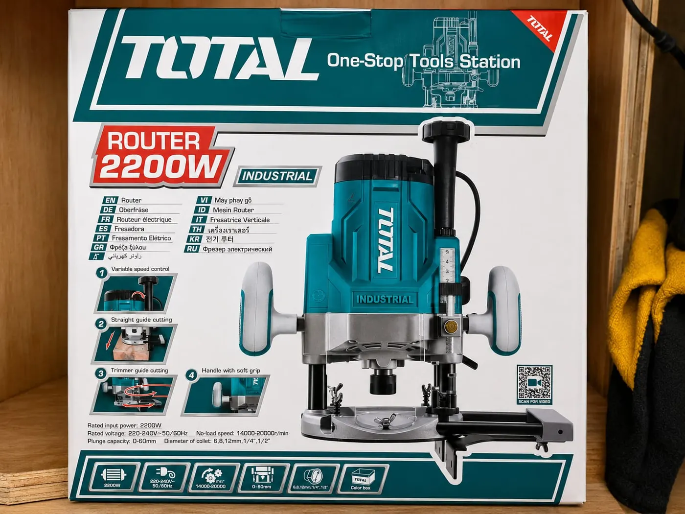
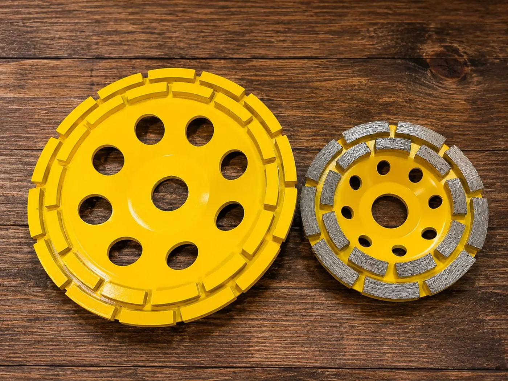
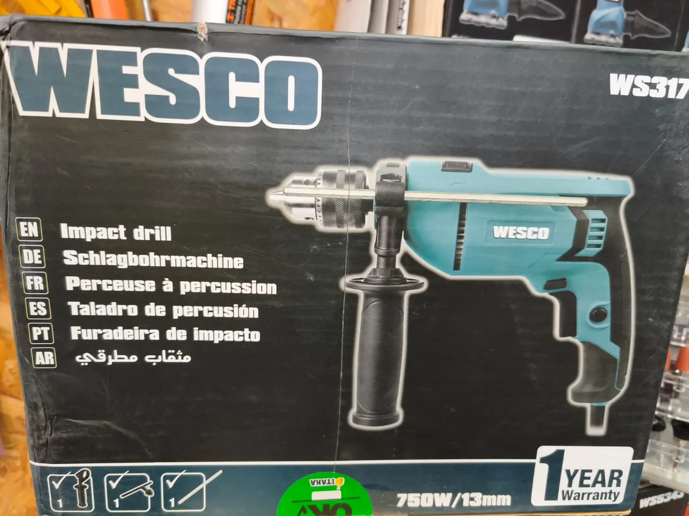
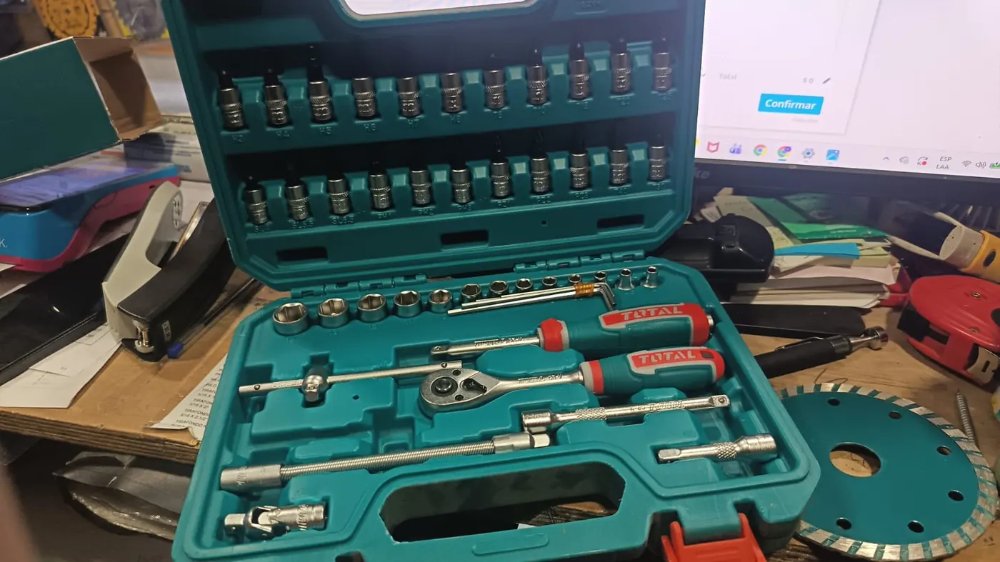
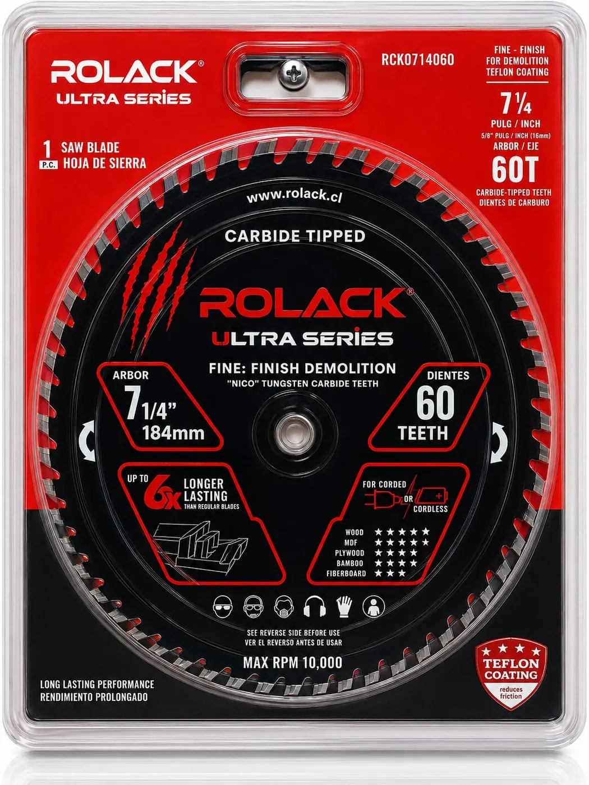
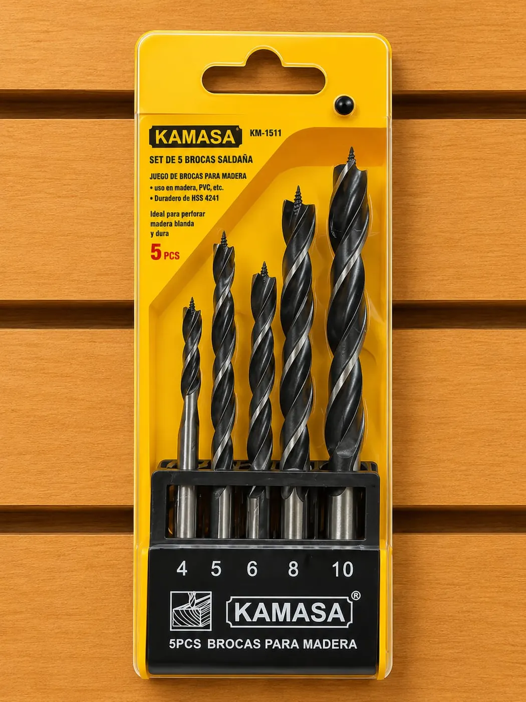
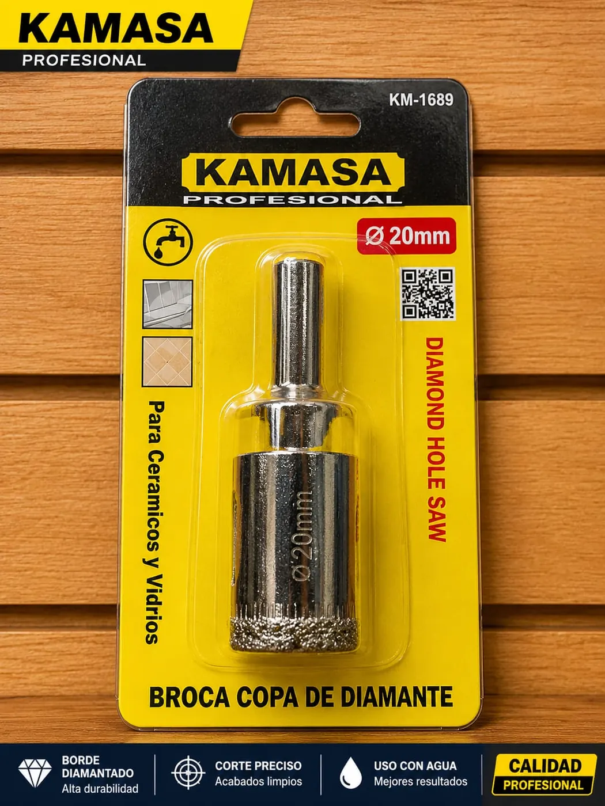
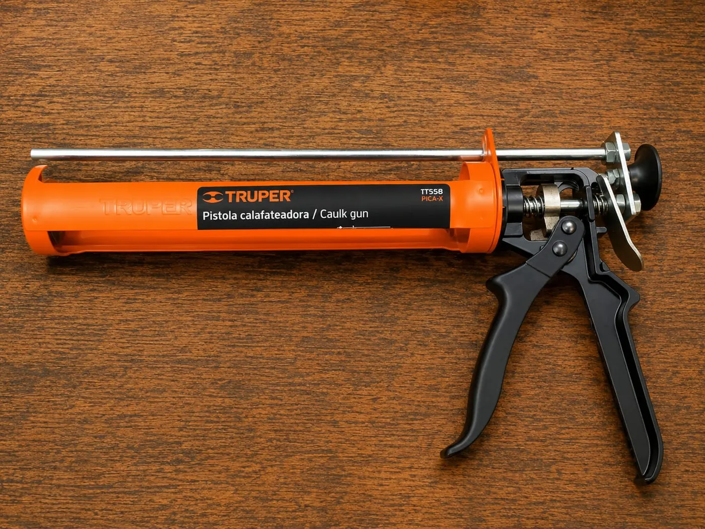
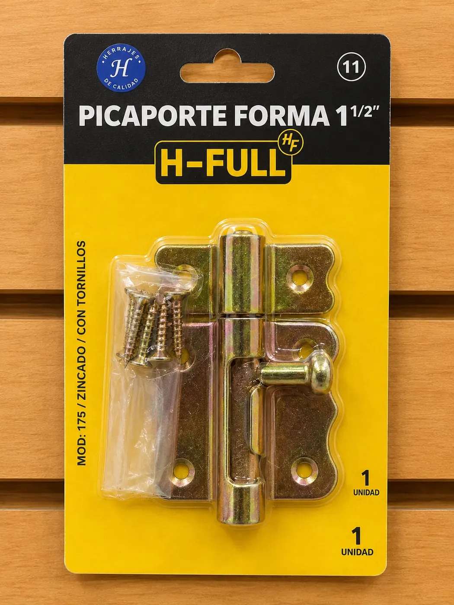

Fresadora Total
Una opción para trabajos de corte y rebaje en madera.
FERRETERÍA OSKAR · CONCEPCIÓN
Herramientas, accesorios y materiales para construir, reparar y avanzar. Te ayudamos a encontrar lo que necesitas para tu próximo proyecto.
01 / EL OFICIO NOS MUEVE
En Ferretería Oskar reunimos herramientas, materiales y soluciones para trabajos grandes y pequeños. Desde un arreglo en casa hasta una obra en marcha, puedes conocer nuestras líneas y consultar por el producto adecuado.

PRODUCTOS REALES / SELECCIÓN OSKAR02 / EXPLORA NUESTRA SELECCIÓN
Una muestra de productos de nuestra selección. Si buscas una medida, marca o modelo específico, consúltanos para confirmar disponibilidad.

Una opción para trabajos de corte y rebaje en madera.

Equipos para perforar y avanzar con precisión.

Accesorios útiles para armado, mantención y reparación.

Distintas soluciones de corte para cada material y acabado.

Sets y medidas para perforaciones de trabajo diario.

Accesorios para aplicaciones y superficies específicas.

Herramientas para sellar, instalar y resolver detalles.

Pequeñas piezas que hacen una gran diferencia.
Para preparar superficies y dar forma al resultado.
Esta es solo una muestra. Explora el catálogo completo con 1.126 referencias agrupadas por producto, marca y medida.
Ver catálogo completo03 / MÁS OPCIONES PARA TU PROYECTO
Además de materiales para construcción, el perfil de Ferretería Oskar informa sobre arriendo de equipos. Cuéntanos qué trabajo vas a realizar y consulta las alternativas disponibles.
Consultar por arriendo04 / HABLEMOS DE TU PROYECTO
Una conversación directa ayuda a confirmar características, alternativas y disponibilidad antes de visitar el local.
Revisa las líneas y productos que pueden ayudarte en tu trabajo.
Indica qué buscas, medidas o cantidades y para qué lo necesitas.
Envía tu consulta por WhatsApp o visita Tucapel 1039, Concepción.
05 / CONTACTO
Prepara tu consulta con algunos datos y llévala a WhatsApp. Si prefieres, escríbenos directamente o ven a conocer la ferretería.
VEN A VISITARNOS